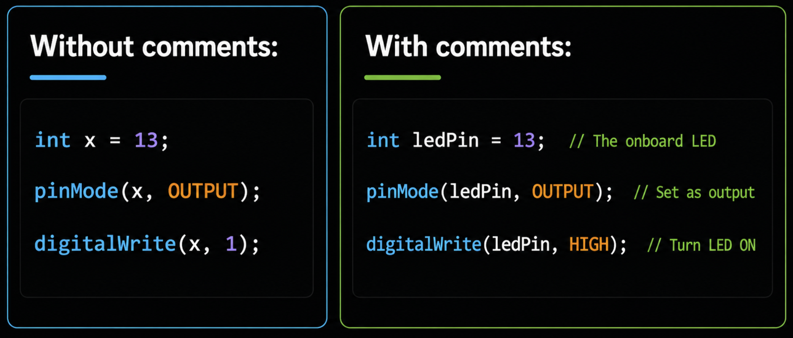

3. Comments
3.1 Why Use Comments?
Comments are notes written for humans — the compiler ignores them completely. They don't affect how your program runs or how much memory it uses.
Comments help you and others understand your code. Without them, even your own code becomes confusing after a few weeks:

3.1.1 Main reasons to use comments:
| Reason | Example |
|---|---|
| Explain why something is done | // Wait 2 sec for sensor to stabilise |
| Describe your project at the top | // Smart fan that turns on above 30°C |
| Label pin connections | // Pin 9 → fan motor via transistor |
| Explain formulas | // TMP36 formula: C = (V - 0.5) * 100 |
| Temporarily disable code for testing | // digitalWrite(LED, HIGH); |
3.2 Two Types of Comments
3.2.1 Single-Line Comment //
Everything after // on that line is ignored:
1 2 | |
3.2.2 Multi-Line Comment /* */
Everything between /* and */ is ignored — can span many lines:
1 2 3 4 | |
Comparison:
Single-Line // |
Multi-Line /* */ |
|
|---|---|---|
| Syntax | // comment |
/* comment */ |
| Spans multiple lines? | No — one line only | Yes |
| Best for | Short notes next to code | Project headers, long explanations |
| Can be nested? | Yes | No — /* /* */ */ causes an error |
3.3 Using Comments to Disable Code (Commenting Out)
A very useful technique — instead of deleting code you're not sure about, you "comment it out" to temporarily disable it. The compiler skips anything inside a comment, so the code is turned off but still there — you can bring it back instantly by removing the comment markers.
How it works:
1 2 3 4 5 | |
3.3.1 When to use commenting out:
| Situation | What to do |
|---|---|
| Debugging — find which line causes a bug | Comment out lines one by one until the bug disappears |
| Testing — try different approaches | Comment out version A, uncomment version B |
| Save code for later | Keep old code as reference while trying something new |
Debugging example:
Your LED isn't working. Comment out sections to isolate the problem:
1 2 3 4 5 6 7 8 9 10 11 12 13 14 15 16 | |
If the LED blinks in Step 1, the wiring is fine — the bug is in your if logic.
Tip: In the IDE, you can quickly comment/uncomment selected lines with the shortcut Ctrl + / (Windows) or Cmd + / (Mac).
3.4 Comment Best Practices
Follow these rules to write comments that are actually helpful, not just clutter:
3.4.1 1. Explain WHY, not WHAT
The code already shows what it does. Your comment should explain why it does it:
1 2 3 4 5 | |
1 2 3 4 5 | |
3.4.2 2. Comment complex formulas
If someone can't understand a line just by reading it, add a comment:
1 2 3 4 5 | |
3.4.3 3. Label pin assignments at the top
Group all pin definitions together with comments describing the physical wiring:
1 2 3 4 5 6 | |
3.4.4 4. Use section dividers for long sketches
Organise your code into labeled sections so it's easy to navigate:
1 2 3 4 5 6 7 8 9 10 11 12 13 14 15 16 17 | |
3.4.5 5. Don't over-comment obvious code
Too many comments are just as bad as no comments — they create clutter and make code harder to read:
1 2 3 4 5 6 7 8 9 | |
3.4.6 6. Keep comments up to date
When you change code, update the comments too. Wrong comments are worse than no comments:
1 2 3 4 5 | |
3.4.7 7. Use TODO comments for unfinished work
Mark things you plan to fix or add later so you don't forget:
1 2 3 4 5 | |